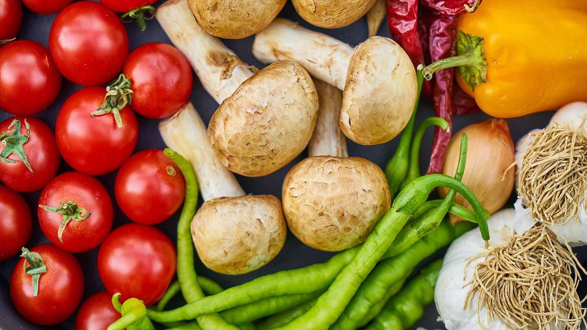

We have built garden beds and grow great food in a Community Garden on Table Mountain and in the enclosed Education Garden. Onslow’s forest restoration areas next to the Waipahihi Stream and on Table Mountain aims to make our school rich in native animals and plants.
For this project we need a gardening team to build garden beds, run a composting program, plant, weed and harvest our own good food. We also need a forest restoration team to plant native trees in cleared areas and weed and care for the establishing plants as well as co-leaders who can work with teachers to plan and run gardening and restoration events.